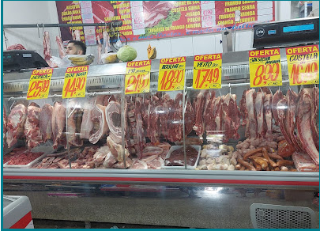
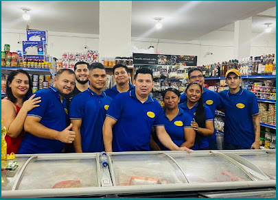

Super Lunna Mercado e Açougue
A SUA ESCOLHA DE TODOS OS DIAS.
Economia de verdade? Vem pro Lunna!
- Promoção e Humor
- Melhor carne, peixe e atendimento
- Parcela até 3x sem juros
Sobre o Super Lunna
No Super Lunna Mercado e Açougue, nossa missão é servir a comunidade do Monte das Oliveiras com o que há de melhor. Selecionamos carnes frescas e peixes de alta qualidade todos os dias, garantindo o melhor preço da região e um atendimento onde você é tratado como parte da nossa família.
Pensando no seu conforto e inclusão, nossa estrutura conta com entrada totalmente acessível para pessoas em cadeira de rodas e estacionamento descoberto gratuito. Entendemos a correria do dia a dia, por isso planejamos nossa loja para proporcionar uma visita rápida e eficiente, sem abrir mão de bons produtos.
Para facilitar sua vida, aceitamos diversas formas de pagamento: cartões de crédito e débito, pagamentos por dispositivo móvel via NFC (aproximação) e convênios como Pluxee. Tudo isso com a facilidade de parcelamento em até 3x sem juros.
Venha nos visitar e comprove por que somos a sua melhor escolha todos os dias!
Encontre tudo o que sua família precisa em um só lugar.
- Açogue completo
- Peixaria
- Hortifruti
- Ofertas especiais
- Promoções
Carnes selecionadas e atendimento especializado.
Equipe atenciosa e pronta para ajudar.


Nossos Setores
Açougue Completo
Carnes de primeira, cortes selecionados e peixe fresco todos os dias.
Nossa Localização
📍 AV. SAMAÚMA, 1941 - MONTE DAS OLIVEIRAS, Manaus - AM
Avaliações dos Clientes
★★★★★
"Otimo lugar pra fazer compras no fim do dia, com açougue e operadoras de caixa muito ágeis (que é dificil de encontrar nos supermercados de manaus), só sinto falta dos produtos PowerSoul, especificamente os cremes de pentear."
★★★★★
"Grande variedade de produtos, e tudo bem barato, o mais barato do bairro."
★★★★★
"Ótimo atendimento.. com bastante variedades de produtos"
★★★★★
"Fui fazer compras e saí muito satisfeito(a)! O atendimento foi rápido e educado, os produtos estavam bem organizados e com ótima qualidade, além de preços justos. O ambiente é limpo e espaçoso, o que torna a compra muito mais agradável. Parabéns à equipe pelo excelente trabalho! Com certeza voltarei mais vezes. 🛒✨ …"
★★★★★
"Mercadinho sortido, variedades de mercadorias e preços excelentes."
★★★★★
"Ótimos preços e um mix de produto para todas as necessidades de sua casa."
★★★★★
"Excelente, ótimos preços, qualidade de primeira e o atendimento é nota 1000!👏🏽🫶🏼🤩 …"